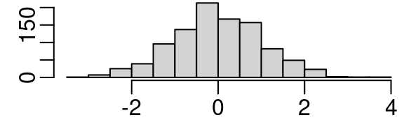
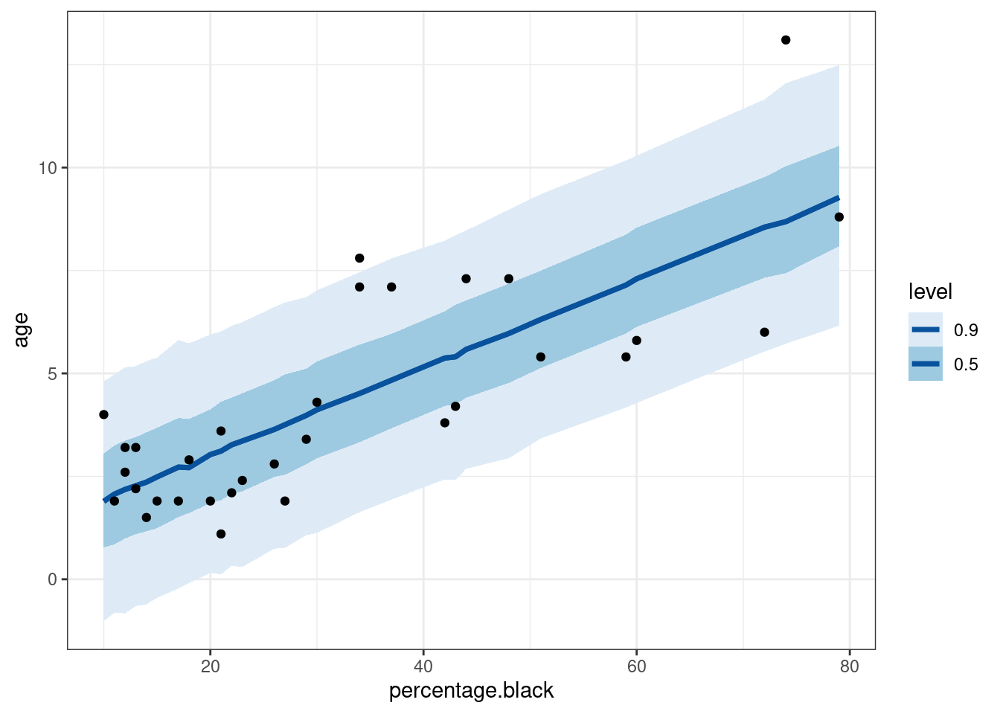
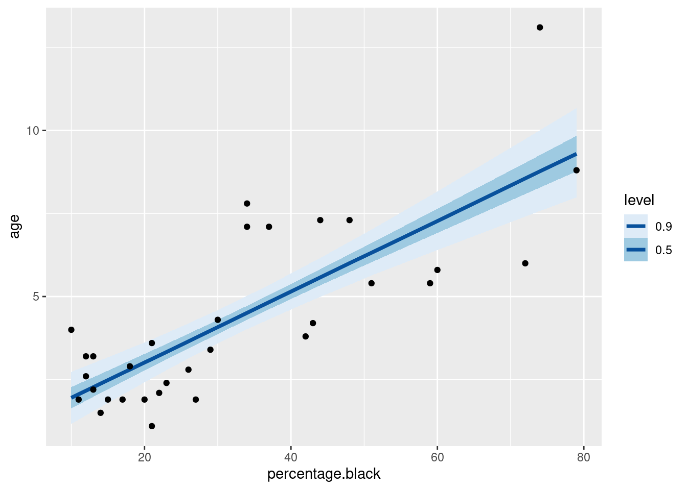

flowchart LR
A[Question] --> B(Data)
B --> C(Tidy)
C --> D(Exploratory analysis)
D --> E{Model}
E --> F[Interpret]
E --> G[Report]
To start, click on the arrow in the “Document structure” box, below.
Document structure
This tutorial assumes that you are working in R Studio.
The main text followed is (Gelman, Hill, and Vehtari 2020), available for free download. Supplementary recommended books are (Fox and Weisberg 2018), (Alexander 2023) available free to read online.
As with all posts in this group, the main text is interspersed with two types of blocks.
Call-outs of supporting information, such as this one, are folded away to avoid their interfering with a first read of the post. I recommend reading them all. You can unfold them by clicking on the far right arrow inside the box.
Code blocks are folded away with an arrow to the left of the numbered code block, for example Code 2.1 Import packages to session. They allow you to implement all of the analysis in the post on your computer. Each code block has numbered notes to the right, referring to particular lines. Click on the number and a box will pop up with a brief explanation of the code. Click again and the pop up closes. I am assuming you read the posts in sequence, so the earlier posts will have pop up explanations that are not repeated in the later code blocks. You can cut and paste the code in each code block into your own R scripting window in R Studio, by clicking on the clipboard in the right end of the block, but I recommend your typing it in, to get practice in how R code works in R Studio.
Working example - trophy hunting of lions
Trophy hunting of lions, particularly males, is a controversial, but active, means of conserving populations. Selective killing of older lions is thought to result in fewer knock-on deaths, as older animals are less likely to be breeding and the killing of a younger breeding male can result in further lion deaths, particularly through infanticide, as a new male replaces the killed male in the pride (Whitman et al. 2004), (Loveridge et al. 2023). The amount of black on a lion’s nose is the best remote indicator of age . This measure has been taken for lions of known age in a long term study at the Serengeti, Tanzania. The data is available for re-analysis in the R package abd and has been used for an example of linear regression in the online book Statistics for ecologists (Fieberg 2024).
The advantages of open data
This worked example is possible because the data has been made easily, publicly accessible. It is not essential, though it is helpful, that it is accessible through an R package. In a later post an optimal workflow for scientists will be discussed in which open data is a component.
The objectives of regression
Let’s review what regression aims to do, applied to the lion nose data, in the call-out box below.
The objectives of regression
Regression is the most widely used method of statistical inference, generalising from the sample on which measurements have been taken to the population for which a hypothesis or, more often and more usefully, the size and direction of effects, is sought.
The sample data for a regression problem, gathered for the project or reused, contains, for each unit on which measurements have been taken, the outcome it is hope to explain and one or more predictors which it is hoped can explain variability in the outcome with sufficient precision to be useful.
Regression, and statistical inference more generally, is therefore a problem of prediction in the face of uncertainty. There is uncertainty about whether:
- the sample represents the population;
- the measurements are truly measuring the features of interest (“measurement validity”); and
- the mathematical relation between outcome and predictor is causal.
Regression usually seeks to predict the average outcome for the predictor(s). To be more explicit in applying this reasoning to the lion nose data set, the predictor is the amount of black on the nose and the outcome which it is aimed to predict is the age of a lion for which the predictor (nose black marks) has been measured, but the outcome (age) is not known.
An hypothesis test could establish whether or not there is a relation between measured nose markings and age, usually phrased as a null hypothesis; H0 there is no relation, versus the alternative hypothesis that H0 is not supported.
This course will not concern itself much with hypothesis testing, but rather the more useful measurement of effects; is there a predictable change in the amount nose marking with age?
It is very unlikely that every lion of a certain age will have exactly the same amount of nose markings. If this was true, you would not need to use statistics, but rather simple algebra. Variability, arising from whatever processes cause nose markings and/or measurement error, are likely to give a range of values for lions of the same age. A regression model uses this variability and the size of the sample data (number of individuals with both nose marking and age measured) to estimate and report on the uncertainty in any prediction. Depending on the method of inference used - Frequentist or Bayesian - the uncertainty is reported as confidence intervals or credible intervals which have subtly different meanings. This will be discussed more later. What is important to remember is that statistical modelling, as opposed to deterministic modelling, is: necessary when there is variability in the data; and is reported with measures of uncertainty. add important uses of regression from Gelman p5?
Analysis of the lion nose data with R
A recap of the ideal sequence of a statistical investigation
We will follow (Cox and Donnelly 2011) in defining seven steps for an applied statistical investigation that integrates the subject matter (lion nose markings and age) and statistical techniques.
- Formulate and clarify a research question of subject-matter importance
- Don’t waste your time on questions for which few people are interested in the answer; make the question(s) clear.
- Design an investigation to produce secure answers.
- bbb
- Produce effective and reliable measurement procedures.
- ccc
- Preliminary analysis
- Often referred to as Exploratory Data Analysis (EDA). Use simple methods with visuals and tables to check data and inform on model choise
- Model formulation and inference
- Develop and apply a model to give answers, with some assessment of thier uncertainty
- Present conclusions
- eee
- Interpret in subject matter terms and in relation to the knowledge base of the field
- fff
Step 1. Subject matter questions
When possible choose an important question that is likely to be soluble from the data. The Lion is classified as globally Vulnerable. Trophy hunting is economically valuable. Therefore an investigation of how selective trophy hunting could minimise the impact on the lion population size is of importance. There is evidence that trophy hunting older lions could cause less impact on the population and that lion age can be measured unobtrusively from the amount of black marking on the nose. The broad questions are:
- Is there a difference in nose marking with age (hypothesis test)?
- Can the difference be modelled to provide a measure of how nose markings change with age (regression model); and
- Can the model be applied, for example to regulate permits for trophy hunting?
Step 4. Exploratory data analysis (EDA), jumping Steps 2 (Study Design) and 3 (Measurement validity) as existing data is being used.
Let’s start with question b. The data is already collected, so the usual Step 2 of designing a study to collect data and Step 3 of measurement validity are not necessary. However, you should read the papers that have been produced using the data, as how the data was gathered (both design and measurement) could affect how it can be interpreted. Maybe contact the authors if you have a query.
A first task, and so usually the first lines of R code, is to import into the analysis session, from your local library on your computer, the necessary R packages for the data handling, manipulation and analysis (Code 3.1) Next, import the data into your session (Code 3.2).
Package management in R
If you are familiar with software that comes ready packaged with all of its capabilities, R may seem strange. It follows a different philosophy of bundling up one or a few related tasks into a package. When R is first downloaded onto your computer, it comes with 15 “base” packages, of the c21,000 packages available in the cloud on the Comprehensive R Archive network and others available from other cloud storage locations.
Any analysis usually needs more than the base packages. This course will use an extra 20 or so. You can, with an internet connection, download and install any extra packages onto your computer, where they will be added to your package library (see the packages tab in R Studio’s lower right window). As developers work on packages, the changed version needs to be updated on your computer. You will not be prompted to update. In R Studio the packages -> update tab is available for this. It will, with an internet connection, search for those of your installed packages that have updates and give you the option to install the updated versions. Most packages are less than 1MB in size and few more than 5MB, so I recommend you check and update packages as often as you have a stable internet connection. I have about 100 packages and update (there usually is something to update) daily, but less often is fine.
Once a package is on your computer, it is not yet available to use in your current analysis session. For this you need to import the package from your library, with a line of code using the library function; for example library(marginaleffects) to import the Marginal Effects package. Repeat this for each package. In writing a script of R code for any work, you usually start with lines to import the necessary packages, as without them the subsequent code depending on them will not run.
Code 3.1 Import packages to session
library(abd) # a biological data package that includes the lion nose data
library(tidyverse) # eight packages including ggplot2 for data visualisation
library(modelsummary)
library(marginaleffects)
library(rstanarm) # Bayesian inference
library(modelr)
library(ggdist)
library(ggtext)
library(gridExtra)
library(modelsummary)
library(kableExtra)
library(gt)
library(rstantools)
library(tidybayes)
library(patchwork)
library(Hmisc)- 1
-
The first lines of any
Rscript usually add packages from your library into your current work session with thelibraryfunction. If you do not have one or more of these packages installed you will need to first runinstall.packages(abd)etc or alternatively, if the package is onCRAN(Comprehensive R Archive Network’s 21,000 packages) use the package -> install button in R Studio’s lower right window and follow the instructions.
Code 3.2 Import lion nose data
lion_noses <- as.data.frame(LionNoses)- 1
-
Load
LionNosesfrom theabdpackage into a data.frame
In your R Studio session, two things have changed. In the top right window under the Environment tab, the data is now loaded and available for analysis, with a description of the number of observations (measured lions) and variables. Click on the blue button in the left and the variables are listed, with their names and type (numerical). If you click on the white rectangle to the right of the text, the full data set appears as a file in the top right window, in a form known as a dataframe in R. The data is in the correct “tidy” format for analysis; one observation (lion) per row and each variable as a column. Hover over the column title and there is a summary of the variable type and range of values. The data is ready for analysis, which is reassuring. Often if acquiring data from someone else, and especially someone who uses Excel, tidying the data to get it in a format for analysis in R or any other statistical software can be a major piece of work.
Code 3.3 Look at the data
skimr::skim(lion_noses)| Name | lion_noses |
| Number of rows | 32 |
| Number of columns | 2 |
| _______________________ | |
| Column type frequency: | |
| numeric | 2 |
| ________________________ | |
| Group variables | None |
Variable type: numeric
| skim_variable | n_missing | complete_rate | mean | sd | p0 | p25 | p50 | p75 | p100 | hist |
|---|---|---|---|---|---|---|---|---|---|---|
| age | 0 | 1 | 4.31 | 2.68 | 1.1 | 2.18 | 3.50 | 5.85 | 13.10 | ▇▃▃▁▁ |
| proportion.black | 0 | 1 | 0.32 | 0.20 | 0.1 | 0.16 | 0.26 | 0.43 | 0.79 | ▇▃▂▁▂ |
As our question is whether there is a relation between lion age and nose markings, a suitable exploratory visualisation is a scatterplot of these two variables. By convention, the outcome variable (age) is put on the y axis and the predictor (nose marking) on the x axis. The nose markings are reported as proportions in the original data. Percentages can be more familiar, so lets create a new variable, percentage.black by multiplying the proportions by 100 then use this variable in the plot and subsequent analysis (Code 3.3 below).
Code 3.3 Create new variable and plot lion nose data
lion_noses <- lion_noses |>
mutate(percentage.black = 100*proportion.black)
ggplot(lion_noses, aes(percentage.black, age)) +
geom_point() +
theme_bw() +
xlab("Percentage of nose black") +
ylab("Age (years)") +
annotate("rect", xmin = 5, xmax = 35, ymin = 0.5,
ymax = 4.8, alpha = .1,fill = "blue") +
annotate("text", x = 22, y = 0, label = "91% of lions under 5 years have 40% or less nose black", colour = "blue", size = 3) +
annotate("rect", xmin = 41, xmax = 80, ymin =5,
ymax = 9, alpha = .1,fill = "green") +
annotate("text", x = 60, y = 9.6, label = "70% of lions over 5 years have more than 40% nose black", colour = "green", size = 3)- 1
-
Two things are happening here. First the lion_noses data is being “piped” with the pipe operator
|>into the second line, so we don’t have to specify it again. Then, themutatefunction is used to create a new variable column named percentage.black by multiplying (*) proportion.black by 100.
- 2
-
Create a ggplot object with the
lion_nosesdata, with the predictor variableproportion.blackon the x axis and the outcomeageon the y axis. Theaesfunction, abbreviated from aesthetic, specifies the graph layout and other features, in this case simply which variables are to be on the x and y axes, in that sequence. - 3
-
Add a scatterplot of the data with
geom_point - 4
- Change the ggplot theme to black & white, see here for other options
- 5
-
Specify the x and y axis labels with
xlabandylab - 6
-
With the
ggplot2functionannotateadd boxes and text inside the plot. Note that the position of both uses the values of the variables on the x and y axes

The scatterplot above (from Code 3.3) shows that there is a trend of increased black on the nose with age, but with variability and with fewer samples for older lions.
add quote on stats being extracting meaning/information from data, but add best possible information, so the meaning is in the model, ble/green box example just a poor model. he non model is usggesting all we need to know is in the data, whilst we know it is imprecise (sampling variability) and the meaning is in a model. Model vs non model.
Step 5. Model formulation and inference
Certainly there is, with variability, an increase in nose markings with age. The first model fit, which we may complicate later, is to suggest a straight line fit. As our data have only one predictor this is a simple linear regression with nose markings predicting age.
The model, let’s call it m1, is:
y = intercept + slope*percentage.black + error
If you remember WASSCE maths, this is the straight line formula y = mx + c, where m is the slope of the straight line and c is the intercept where the line meets the y axis with the addition of what statisticians call, unfortunately, error. In fact error is anything that may account for uncertainty and so an imperfect fit. This could be measurement error on the nose markings, but also other variables, not measured and so not in this model, that may influence nose markings, for example the lifetime health of a lion. It is unlikely can nose marking will perfectly predict age, like tree rings.
Slope and Intercept are parameters, for which m1, constrained as a straight line model, will select measures, given the data, which are in some mathematical sense a best fit of the data to the line.
At this stage, I do not want to complicate things with discussing whether classical or Bayesian inference should be used. We shall dodge the issue for now by running the model with the Bayesian inference package rstanarm with flat priors, which is identical to a classical fit. This may mean nothing, but don’t worry for now. We will return to this. Let’s run the model with (Code 3.4) and print the R output (Code 3.5). Read carefully the code annotation note in Code 3.4, which describes the R syntax for writing a model.
Output from broom.mixed
broom.mixed::tidy(m1, conf.int = TRUE)# A tibble: 2 × 5
term estimate std.error conf.low conf.high
<chr> <dbl> <dbl> <dbl> <dbl>
1 (Intercept) 0.888 0.602 -0.117 1.89
2 percentage.black 0.106 0.0160 0.0801 0.133Code 3.4 Simple linear model
m1 <- stan_glm(age ~ percentage.black, data = lion_noses,
prior_intercept = NULL, prior = NULL, prior_aux = NULL)- 1
-
This is our first specification of a model in R, so worth looking at in detail, as most R modelling code is similar. The function
stan_glmnames the inferential method, in this case Bayesian inference from therstnarmpackage. The tilde~separates the left and right sides of the equation. To the left is the outcome (age) and to the right the predictors, in this case just percentage.black. The data to be used is specified, usually from the name of a file loaded into the R Studio environment. There may then be extra arguments, in this example specifying the priors to make the Bayesian model identical to a classical model. The assigment symbol<-saves the output of the model as an objectm1which is visible in the R Studio environment.
Modelling process (following ROS chs 6-9)
ROS Ch 6 summary
At a purely mathematical level, the methods described in this book have two purposes: prediction and comparison. We can use regression to predict an outcome variable, or more precisely the distribution of the outcome, given some set of inputs. And we can compare these predictions for different values of the inputs, to make simple comparisons between groups, or to estimate causal effects, a topic to which we shall return in Chapters 18–21. In this chapter we use our favoured technique of fake-data simulation to understand a simple regression model, use a real-data example of height and earnings to warn against unwarranted causal interpretations, and discuss the historical origins of regression as it relates to comparisons and statistical adjustment.
ROS Ch 7 summary
As discussed in Chapter 1, regression is fundamentally a technology for predicting an outcome y from inputs x 1, x 2, . . . . In this chapter we introduce regression in the simple (but not trivial) case of a linear model predicting a continuous y from a single continuous x, thus fitting the model yi = a + bx i + error to data (x i, yi ), i = 1, . . . , n. We demonstrate with an applied example that includes the steps of fitting the model, displaying the data and fitted line, and interpreting the fit. We then show how to check the fitting procedure using fake-data simulation, and the chapter concludes with an explanation of how linear regression includes simple comparison as a special case.
Note
Most of this book is devoted to examples and tools for the practical use and understanding of regression models, starting with linear regression with a single predictor and moving to multiple predictors, nonlinear models, and applications in prediction and causal inference. In this chapter we lay out some of the mathematical structure of inference for regression models and some algebra to help understand estimation for linear regression. We also explain the rationale for the use of the Bayesian fitting routine stan_glm and its connection to classical linear regression. This chapter thus provides background and motivation for the mathematical and computational tools used in the rest of the book.
Chapter 7 sequence
- read in the data, having tidied first if necessary
- made easy on this occasion as the data is in an R package and is tidy (one row per observation, one column per variable)
- define your model
- For the first and simplest model (m1) assume there is a straight line relation between the outcome (age) and the predictor (nose markings), though with uncertainty (“error”) due to one or all of sampling error, measurement error and model error. Our model is therefore the straight line equation ‘y = a + bx’ plus error, where a is the intercept (where the line meets the y axis) and x is the slope. So,
age = a + b*percentage.black + error
- For the first and simplest model (m1) assume there is a straight line relation between the outcome (age) and the predictor (nose markings), though with uncertainty (“error”) due to one or all of sampling error, measurement error and model error. Our model is therefore the straight line equation ‘y = a + bx’ plus error, where a is the intercept (where the line meets the y axis) and x is the slope. So,
- convert the model into R code
- There are several inference machines in statistics, all available in R. We’ll use Bayesian inference via the user-friendly
rstanarmpackage, but regularly cross-reference examples to classical inference implements with thelmfunction of R’s base packagestats. With rstanarm our first line of code ism1 <- stan_glm(age ~ percentage.black,data = lion_noses)seeCode 3.4for more explanation Note To make rstanarm produce same aslmthe code isstan_glm(age ~ percentage.black, data=lion_noses, prior_intercept=NULL, prior=NULL,prior_aux=NULL, algorithm="optimizing")
- There are several inference machines in statistics, all available in R. We’ll use Bayesian inference via the user-friendly
- run your model and look at the results
- either print as in code 3.5 or use the
modelsummarypackage
- either print as in code 3.5 or use the
Show the code
modelsummary(m1, gof_map = NA, statistic = 'conf.int', conf_level = 0.95, shape = term ~ model + statistic)| (1) | |||
|---|---|---|---|
| Est. | 2.5 % | 97.5 % | |
| (Intercept) | 0.888 | -0.320 | 2.089 |
| percentage.black | 0.106 | 0.075 | 0.139 |
| parameter | estimate | uncertainty |
|---|---|---|
| a | 0.872 | 0.603 |
| b | 0.107 | 0.016 |
| \(\sigma\) | 1.713 | 0.227 |
These can also be calculated “by hand” from the posterior simulations
parameters and uncertainty from model matrix (use array?) of posterior simulations
sims <- as.matrix(m1)
estimate_a <- round(median(sims[,1]),3)
estimate_b <- round(median(sims[,2]),3)
estimate_c <- round(median(sims[,3]),3)
ci_a <- round(quantile(sims[,1], c(0.025, 0.975),3))
ci_b <- round(quantile(sims[,2], c(0.025, 0.975),3))
printL(
"the estimated intercept is" = estimate_a,
"the estimated slope is"=estimate_b,
"the estimated residual standard deviation is"=estimate_c,
"the intercept cis are"=ci_a,
"the slope cis are"=ci_b
)the estimated intercept is: 0.888
the estimated slope is: 0.106
the estimated residual standard deviation is: 1.728
the intercept cis are:
2.5% 97.5%
0 2
the slope cis are:
2.5% 97.5%
0 0 Show the code
par(mar=c(2, 2, 0, 0), mgp=c(2, .5, 0))
set.seed(1)
x <- rnorm(1000)
hist(x, nclass=40, main='')Show the code
x[1:3] # ordinary output stays put[1] -0.6264538 0.1836433 -0.8356286Show the code
knitr::kable(x[1:3]) # html output put in margin| x |
|---|
| -0.6264538 |
| 0.1836433 |
| -0.8356286 |
Show the code
hist(x, main='')
So the result for \(\sigma\) the residual standard deviation means that age will be within +/- 2*1.7 = +/-3.4 years 95% of the time.
The R2 is given by R2 <- 1 - sigma(m1)^2 / sd(lion_noses$age)^2
Show the code
r2 <- 1- sigma(m1)^2 / sd(lion_noses$age)^2
print(r2)[1] 0.5830417So almost 60% of the variance in age can be explained by nose markings. Where is the other 40%? Probably in other variables (lion health?) the model did not include.
Code 3.5 model 1 output
print(m1, digits = 3)stan_glm
family: gaussian [identity]
formula: age ~ percentage.black
observations: 32
predictors: 2
------
Median MAD_SD
(Intercept) 0.888 0.602
percentage.black 0.106 0.016
Auxiliary parameter(s):
Median MAD_SD
sigma 1.728 0.233
------
* For help interpreting the printed output see ?print.stanreg
* For info on the priors used see ?prior_summary.stanregCode 3.5 model 1 summary
summary(m1, digits = 3)
Model Info:
function: stan_glm
family: gaussian [identity]
formula: age ~ percentage.black
algorithm: sampling
sample: 4000 (posterior sample size)
priors: see help('prior_summary')
observations: 32
predictors: 2
Estimates:
mean sd 10% 50% 90%
(Intercept) 0.891 0.607 0.132 0.888 1.661
percentage.black 0.106 0.016 0.086 0.106 0.127
sigma 1.751 0.242 1.461 1.728 2.072
Fit Diagnostics:
mean sd 10% 50% 90%
mean_PPD 4.322 0.436 3.770 4.322 4.873
The mean_ppd is the sample average posterior predictive distribution of the outcome variable (for details see help('summary.stanreg')).
MCMC diagnostics
mcse Rhat n_eff
(Intercept) 0.011 1.001 3307
percentage.black 0.000 1.000 3358
sigma 0.004 1.000 3299
mean_PPD 0.007 1.001 3515
log-posterior 0.032 1.000 1589
For each parameter, mcse is Monte Carlo standard error, n_eff is a crude measure of effective sample size, and Rhat is the potential scale reduction factor on split chains (at convergence Rhat=1).When the model m1 is run, a large amount of information is saved into m1, now visible in the R Studio environment. The essentials for interpreting the model are shown above, with the print(m1) command, but we could also look at any of the 27 stored objects individually, most of which we will not use, for example the coefficients (lines 8-9 above, hover over the code output) with m1$coefficients, which gives the same information as the Median column in the summary, although to more decimal places. This option to look more carefully at the output, rather than be presented with just a summary, is distinctive to R and other coding softwares.
The output is telling us (lines 7-9 highlighted), for now ignoring statistical uncertainty, that the best fit to the proposed model y = intercept + slope*percentage.black + error is:
age = 0.9 + 0.1*percentage.black
Let’s plot this line and the data.
Code 3.6 A plot of the simple linear regression for model 1
p1 <- ggplot(lion_noses, aes(percentage.black, age)) +
geom_point() +
geom_abline(intercept = 0.9, slope = 0.1) +
theme_bw() +
xlab("percentage black on nose") +
ylab("age (years)")
df <- data.frame(
x = 26,
y = 5,
label = "y = 0.9 + 0.1x"
)
p1 + geom_label(data = df, aes(x,y, label = label),
color = "black", size = 5) +
xlim(0, 80)
Let’s plug some numbers into the equation. Three lions L1, L2 and L3 are photographed in the field and subsequent investigation of the image estimates 42%, 50% and 60% nose markings. Using R as a pocket calculator, L1’s estimated age is given by the R code 0.9 + 0.1*42 = 5.1 years, L2’s 0.9 + 0.1*50 = 5.9 years and L3’s 0.9 + 0.1*60 = 6.9 years. As our model is a monotonic line (no curves), change in y as determined by the slope is constant and the general result is that;
A 10% increase in nose markings equates to a 1 year increase in age.
A safe interpretation is that, under model assumptions, the average difference in age, comparing two lions 10% different in nose markings, is one year. The safest interpretation of a regression is as a comparison. a nod towards effects and causal inference.
To summarize: regression is a mathematical tool for making predictions. Regression coefficients can sometimes be interpreted as effects, but they can always be interpreted as average comparisons.
If our model is correct, which we shall need to check, it is a better method of selecting which lions to hunt for trophies than the ad-hoc model, which assumed a lion with 40% nose markings was under 5 years. L1 met that threshold, but only just. If our measurer had been in a hurry and making small mistakes, whereas the actual measure was 40%, L1’s age should have been modelled as 0.9 +0.1*40 = 4.9 years and he could have not been made available to trophy hunters. CHECK THIS
The standard error for the slope (MAD_SD on line 9 of the model output Code 3.5) is 0.015, so the model as a slope of, to two decimal places, 0.11 +/- 0.01 and the 95% interval
Code 3.7 Print the Confidence Intervals for model 1
round(posterior_interval(m1, prob = 0.95), 2) 2.5% 97.5%
(Intercept) -0.32 2.09
percentage.black 0.07 0.14
sigma 1.35 2.28
ROS Ch 9
Bayesian inference involves three steps that go beyond classical estimation. First, the data and model are combined to form a posterior distribution, which we typically summarize by a set of simulations of the parameters in the model. Second, we can propagate uncertainty in this distribution—that is, we can get simulation-based predictions for unobserved or future outcomes that accounts for uncertainty in the model parameters. Third, we can include additional information into the model using a prior distribution. The present chapter describes all three of these steps in the context of examples capturing challenges of prediction and inference.
For now we’ll not worry about priors, complicated and we have no prior information to feed into the model, but concentrate on the posterior simulations.
estimates from simulation matrix
sims <- as.matrix(m1)
Median <- round(apply(sims, 2, median),3)
MAD_SD <- round(apply(sims, 2, mad),3)
print(cbind(Median, MAD_SD)) Median MAD_SD
(Intercept) 0.888 0.602
percentage.black 0.106 0.016
sigma 1.728 0.233Code 3.9 A comparison of classical and Bayesian models
models <- list(
"OLS classical" = lm(age ~ percentage.black, data = lion_noses),
"OLS rstanarm default priors" = stan_glm(age ~ percentage.black, data = lion_noses),
"OLS rstnarm flat priors" = stan_glm(age ~ percentage.black, data = lion_noses, prior_intercept = NULL, prior = NULL, prior_aux = NULL)
)Code 3.10 A comparison of classical and Bayesian models
modelsummary(models, gof_map = NA, statistic = 'conf.int', conf_level = 0.95, stars = TRUE, shape = term ~ model + statistic)| OLS classical | OLS rstanarm default priors | OLS rstnarm flat priors | |||||||
|---|---|---|---|---|---|---|---|---|---|
| Est. | 2.5 % | 97.5 % | Est. | 2.5 % | 97.5 % | Est. | 2.5 % | 97.5 % | |
| + p < 0.1, * p < 0.05, ** p < 0.01, *** p < 0.001 | |||||||||
| (Intercept) | 0.879 | -0.283 | 2.041 | 0.892 | -0.272 | 2.068 | 0.869 | -0.281 | 2.054 |
| percentage.black | 0.106*** | 0.076 | 0.137 | 0.106 | 0.074 | 0.136 | 0.107 | 0.076 | 0.138 |
Note
Note that there are five types of callouts, including: note, warning, important, tip, and caution.
Tip with Title
This is an example of a callout with a title.
Code 3.11 Plot mean uncertainty
lion_noses %>%
tidybayes::add_epred_draws(m1) %>%
ggplot(aes(x = percentage.black, y = age)) +
stat_lineribbon(aes(y = .epred), .width = c(0.5, 0.9), color = "#08519C") +
geom_point(data = lion_noses) +
scale_fill_brewer()
Code 3.12 Plot individual uncertainty
lion_noses %>%
tidybayes::add_predicted_draws(m1) %>%
ggplot(aes(x = percentage.black, y = age)) +
stat_lineribbon(aes(y = .prediction), .width = c(0.5, 0.9), color = "#08519C") +
geom_point(data = lion_noses) +
theme_bw() +
scale_fill_brewer()Code 3.13 Plot mean and individual uncertainty combined
p1 <- lion_noses |>
tidybayes::add_epred_draws(m1) |>
ggplot(aes(x = percentage.black, y = age)) +
stat_lineribbon(aes(y = .epred), .width = c(0.5, 0.9), color = "#08519C") +
geom_point(data = lion_noses) +
scale_fill_brewer()
p2 <- lion_noses |>
tidybayes::add_predicted_draws(m1) |>
ggplot(aes(x = percentage.black, y = age)) +
stat_lineribbon(aes(y = .prediction), .width = c(0.5, 0.9), color = "#08519C") +
geom_point(data = lion_noses) +
theme_bw() +
scale_fill_brewer()
p3 <- lion_noses |>
tidybayes::add_epred_draws(m1)
p4 <- lion_noses |>
tidybayes::add_predicted_draws(m1)
p5 <- bind_rows(p3, p4)
p5 |>
ggplot(aes(x = percentage.black, y = age)) +
stat_lineribbon(aes(y = .epred), .width = c(0.95), color = "#08519C") +
stat_lineribbon(aes(y = .prediction), .width = c(0.9), color = "#08519C", alpha = 0.2) +
geom_point(data = lion_noses) +
theme_bw() +
scale_fill_brewer() +
guides(fill = FALSE)Code 3.14 Plot mean and individual uncertainty side by side
p1 / p2Present conclusions
yaba yaba
Interpret in subject matter terms
Shiny app
It is often useful in communicating your results to have an interactive app that can, in this case, allow someone to enter a nose marking measure and get output on the lion’s age with the model hidden. This has become increasingly easy in R with Shiny. We’ll follow the official Shiny website and also a nice example on spatio-temporal data from (Morega 2020) which is free online
Notes on stuff to add/added
added quarto line-highlight extension for highlighting code, including output code and fontawesome for icons
final section shiny app??
Check Paula Morega
add labels to code chunks cv quarto template
add targets
sam csik’s blog article has instructions and code, how to add footnotes and a bibliography and citations and how to populate margins. Use these. also recommends W3 schools for css/scss/html
refs and open books to add
R for Data Science 2e and source code on GitHub Tidy Modeling with R Byes Rules! An Introduction to Applied Bayesian Modelling uses rstanarm Frank Harrell’s R workflow, inlcuding Quarto
References
Alexander, Rohan. 2023. Telling Stories with Data with Applications in R. Chapman; Hall/CRC Press.
Cox, D. R., and Christl A. Donnelly. 2011. Principles of Applied Statistics. Cambridge University Press.
Fieberg, John. 2024. Statistics for Ecologists: A Frequentist and Bayesian Treatment of Modern Regression Models. University of Minnesota Libraries Publishing. https://doi.org/10.24926/9781959870029.
Fox, John, and Sanford Weisberg. 2018. An R Companion to Applied Regression. 3rd Edition. Sage Publications.
Gelman, Andrew, Jennifer Hill, and Aki Vehtari. 2020. Regression and Other Stories. Analytical Methods for Social Research. Cambridge University Press.
Loveridge, Andrew J., Matthew Wijers, Roseline Mandisodza-Chikerema, David W. Macdonald, and Guillaume Chapron. 2023. “Anthropogenic Edge Effects and Aging Errors by Hunters Can Affect the Sustainability of Lion Trophy Hunting.” Scientific Reports 13 (1). https://doi.org/10.1038/s41598-022-25020-9.
Morega, Paula. 2020. Geospatial Health Data. Modelling and Visiualisation with r-INLA and Shiny. Routledge/CRC Press.
Whitman, Karyl, Anthony M. Starfield, Henley S. Quadling, and Craig Packer. 2004. “Sustainable Trophy Hunting of African Lions.” Nature 428 (6979): 175–78. https://doi.org/10.1038/nature02395.
Citation
BibTeX citation:
@online{robinson2024,
author = {Robinson, Paul},
title = {2: {Simple} Linear Regression},
date = {2024-08-17},
url = {https://paulauvirage.github.io/posts/2024-08-19-simple-linear-regression/},
langid = {en}
}
For attribution, please cite this work as:
Robinson, Paul. 2024. “2: Simple Linear Regression.” August
17, 2024. https://paulauvirage.github.io/posts/2024-08-19-simple-linear-regression/.